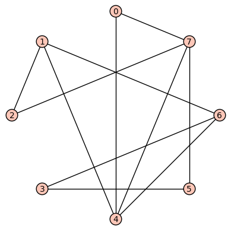

With this section, we introduce the second of three main tools of discrete structures: the graph. We have already met and extensively used the concept of a directed graph in our study of relations. A graph is just like a directed graph... except without the direction. In other words, a graph is a collection of vertices with edges that connect some of them, and the edges are just line segments with no direction specified. Graphs are at the heart of many important algorithms and are useful in modeling many situations involving networks and connections. In this section, we will introduce the concept of a graph (and the related ideas of directed graphs and multigraphs), paths and circuits in a graph, isomorphic graphs, and the degree of a vertex.
Basic objectives: Each student is responsible for gaining proficiency with each of these tasks prior to engaging in class discussions, through the use of the learning resources (below) and through the working of exercises (also below). Note that important new terminology is given in italics.
Advanced objectives: The following objectives are the subject of class discussion and further work; they should be mastered by each student during and following class discussions.
To gain proficiency in the learning objectives, use the following resources. You may include other resources if you wish, in addition to or in replacement of the following.
Textbook: In ADS, read Section 9.1. Make sure to read actively, working through examples and activities as you go.
Video: This video is optional if you understood the book, but I thought it was very clear and potentially helpful:
Some notes about this video: When the speaker defines the edge list of a graph, he does it in terms of two-element subsets of the vertex set, for example \({v_1, v_2}\); for us, we'll consider an edge to be an ordered pair of elements from the vertex set instead, for example \((v_1, v_2)\). Finally, this video introduces some ideas we are not formally taking up until later, specifically the concept of the adjacency matrix for an undirected graph, but it doesn't hurt to see it early.
The following exercises are to be done during and following your reading and viewing of the resources. Work these out on paper and then enter the responses into the appropriate submission form (see Submission Instructions) by the deadline. You will receive a mark of Pass if each item response shows a good-faith effort to be right and is submitted prior to the deadline.
All of the exercises refer to this (undirected) graph:

[(7,4), (4,6)] and this path has length = 2.[d0, d1, d2, d3, d4, d5, d6, d7] in which d0 is the degree of vertex 0, d1 is the degree of vertex 1, etc. This is called the degree sequence of the graph.In case the embedded Sage cell above doesn't appear or doesn't work, here is the block of code inside it that you can cut/paste into a Sage worksheet at SageMath Cloud:
random_graph = graphs.RandomGNP(10, 0.5) random_graph.show() print('Number of edges = %s') % random_graph.num_edges() print('Sum of degrees = %s') % sum(random_graph.degree_sequence())
Submit your responses using the form at this link: http://bit.ly/1MrLRkh